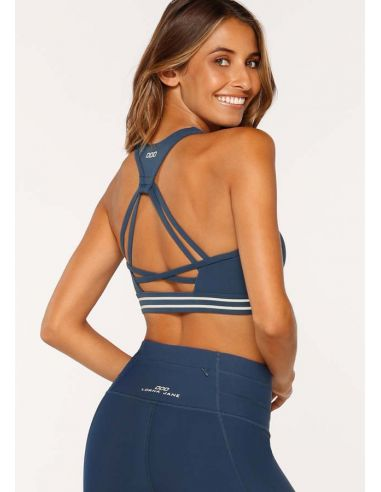

La ropa deportiva se abre paso en el negocio de la moda
La mezcla de deporte y moda no es una tendencia, sino el reflejo de un cambio de valores en una sociedad que apuesta cada vez más por aspectos como la salud, el reciclaje o la ecología. Esta realidad ha llevado a las marcas
de artículos deportivos no solo a impulsar la necesaria y tradicional innovación técnica y de diseño, sino también a centrarse en una nueva forma de entender la estética deportiva: el athleisure o unión de lo atlético con el ocio.
En este nuevo escenario, las marcas de artículos y prendas deportivas están empezando a cambiar y, junto a la investigación y desarrollo de productos, ponen el acento en las nuevas preferencias y necesidades del cliente. Establecen
diferencias entre para qué uso diseñan sus productos, especialmente los tecnológicos, y para qué se están utilizando realmente. Las empresas deben analizar quién es su cliente y enfocar sus negocios no solo para lanzar ropa y zapatos
destinados a las prácticas deportivas, sino teniendo en cuenta la posibilidad y rentabilidad de otros usos, porque es cada vez más habitual que, aunque inicialmente fueran diseñados para gimnasios y competiciones, también sean empleados
para salir en la gala de los Óscar.
Este cambio de accesorio deportivo a artículo de moda tuvo su origen en las mujeres que asistían a clases de yoga en Estados Unidos. Lo que ahora parece una locura quizá no lo sea tanto, porque la tendencia es acortar las diferencias entre
los atuendos de hombres y mujeres, y los tejanos van a ser sustituidos muy pronto por leggins en todos los colores para poder hacer frente a todas las combinaciones posibles. Las capas serán fundamentales, todo intercambiable y combinable.
Nuevos Valores
El deporte ha pasado a formar parte de la sociedad, algo que deben tener en cuenta todas las empresas del sector para alinear sus negocios con estos nuevos valores. Otro aspecto importante que se debe considerar es que las
distancias se están acortando. El athleisure no es solo un formato de mujeres y la mezcla de deporte y moda se verá cada vez más en hombres que ocupan puestos de responsabilidad. Al mismo tiempo, las personas de edad más avanzada también
visten zapatillas de deporte y esta es una realidad imparable que se traslada a todos los negocios.
Otro aspecto al que deben prestar atención las marcas de moda deportiva es el de los millennials, porque en cinco años representarán cerca del 50 % de la fuerza laboral. No ir tatuado, tomar zumos verdes o cuidarse es lo que viene, algo que
está muy asociado con los valores de la nueva sociedad, lo que hace pensar que esto no es tendencia, sino que se trata de un cambio..

Tendencias
Modelos como Elle McPherson, que nunca ha corrido un maratón, se pasean por el mundo con toda la equipación: zapatillas de deporte, leggins o mallas, varias capas de prendas, gafas de sol y bolso. Sin embargo, no todo vale,
por lo que las marcas deberán trabajar para crear looks atractivos diferenciando las temporadas. Ahora, solo en Estados Unidos existen personal shoppers especializados en esta tendencia que aún no ha llegado a los puntos de venta. Los
consumidores finales son quienes deciden si un look es bueno. La fórmula es combinar artículos deportivos de lujo con prendas técnicas de buenas marcas y precios caros, para dar esa estética de ir al gimnasio sin haberlo pisado.
Entre los retos de las marcas deportivas está no perder el posicionamiento. Es muy importante saber quién viste un determinado artículo, porque este es un factor que puede echar abajo una enseña. Para una marca de prestigio es un gran reto
no perder su identidad, porque el objetivo es hacer negocio muchos años. El segundo aspecto clave es la tecnología. Las prendas deportivas tienen que innovar y evolucionar en lo que respecta a los materiales, ya que el diseño ha dejado de
ser solo una cuestión de colores..
Edicion Limitada
La edición limitada, o lanzamiento de un número determinado de artículos, tiene como figura clave en las marcas deportivas al sneakerhead o persona obsesionada con coleccionar modelos exclusivos de zapatillas de
deporte,
principalmente creaciones destinadas al baloncesto o al skateboarding. Esta moda, que nació en la década de los ochenta del siglo pasado en Estados Unidos y traspasó fronteras, ha sido aprovechada con acierto por la industria del sector con
el lanzamiento de colecciones pensadas para alimentar la demanda. Al ser producciones limitadas, su exclusividad incrementa su precio y las marcas de primer orden han abierto tiendas especializadas en este campo.
La importancia actual de las ediciones limitadas radica en que se están convirtiendo en símbolos de estatus y de exclusividad, realidad que está dando una vuelta a la industria, que debe gestionar este apartado. Se
trata
de un negocio de
reventa, en el que los precios pueden superar los mil euros en muchas marcas, principalmente las de zapatillas de baloncesto. A nivel de negocio, estas zapatillas también tienen su impacto, ya que ahora salen en las redes sociales y son las
preferidas de cantantes, artistas y modelos.
Por otro lado, las marcas de artículos deportivos deben cuidar la segmentación, separando cada grupo de clientes con el fin de ofrecer los productos que encajen con su demanda. Hoy es vital saber lo que se ofrece en cada punto de venta, con
un modelo en el que cada establecimiento comercialice productos asociados a su perfil de consumidor.
Otro aspecto a tener en cuenta es cuál es el negocio de las marcas deportivas, teniendo mucho cuidado en la sostenibilidad del negocio. La tendencia del athleisure es muy fuerte y con precios muy altos, pero ¿realmente
es
sostenible? ¿Se
está gestionando bien? Lo que está claro es que hay que estar muy atentos a la demanda, a la vez que no se pierden las raíces, porque el cliente busca autenticidad y las marcas que llevan años tienen historia y, por tanto, algo que contar.
En cuanto al producto, es decir, materiales y tecnología, no hay que frenar el viaje al athleisure, con una apuesta fuerte por la segmentación. ASICS seguirá haciendo las mejores zapatillas que pueda, lo que no significa que no deba
segmentar el mercado, reconocer una tendencia o un nuevo consumidor y hacer adaptaciones de sus productos para cubrir esa demanda. Se puede vender deporte y moda sin perder credibilidad. Es el cliente quien dice si busca solo material
técnico deportivo o si prefiere artículos que pueda combinar para ir a la moda.